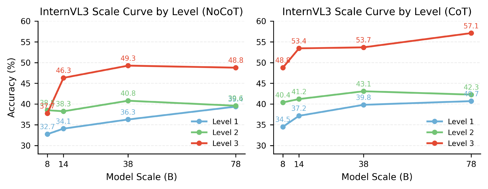
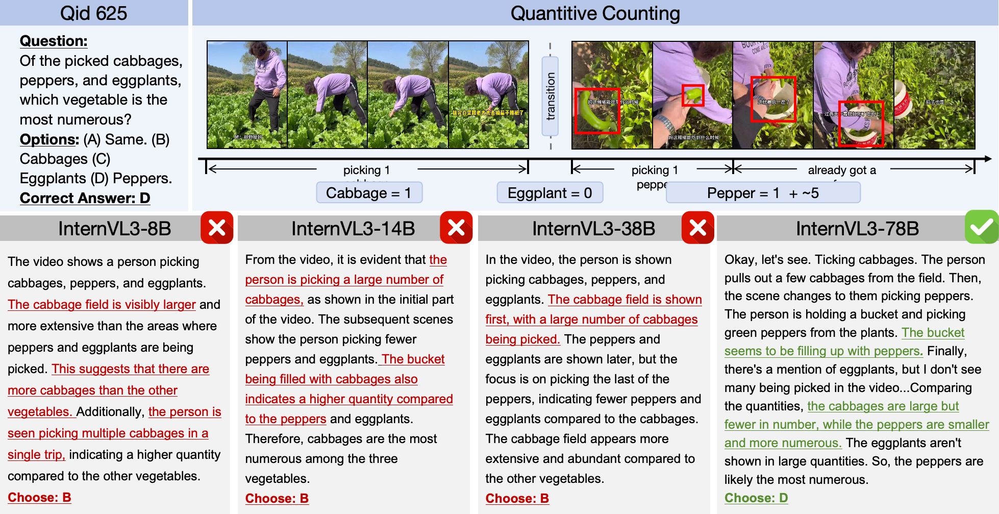

Discussion Subpage
Scaling Up and Failure Demo

InternVL3 generally improves from 8B to 78B, but gains are uneven by level. The largest gains appear in Level 3 compositional reasoning, especially under Zero-shot CoT, while Level 2 remains comparatively stagnant.

This suggests scaling helps high-level arithmetic reasoning more than foundational visual grounding (instance tracking and cross-shot re-identification), which remains a core bottleneck.
Back to Main Page